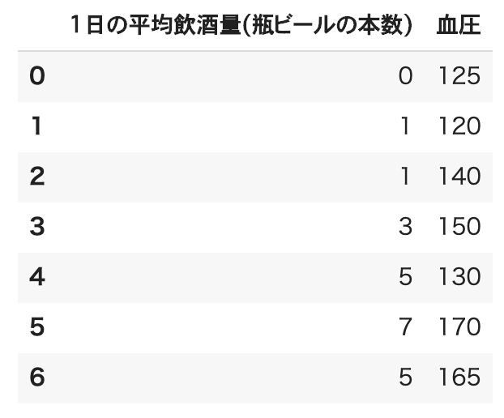
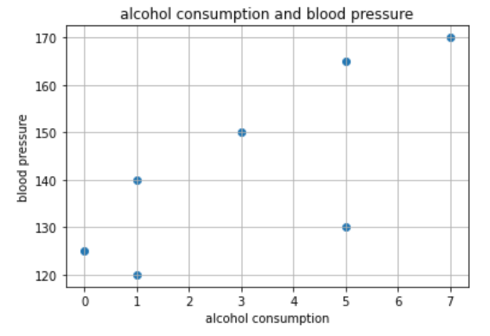
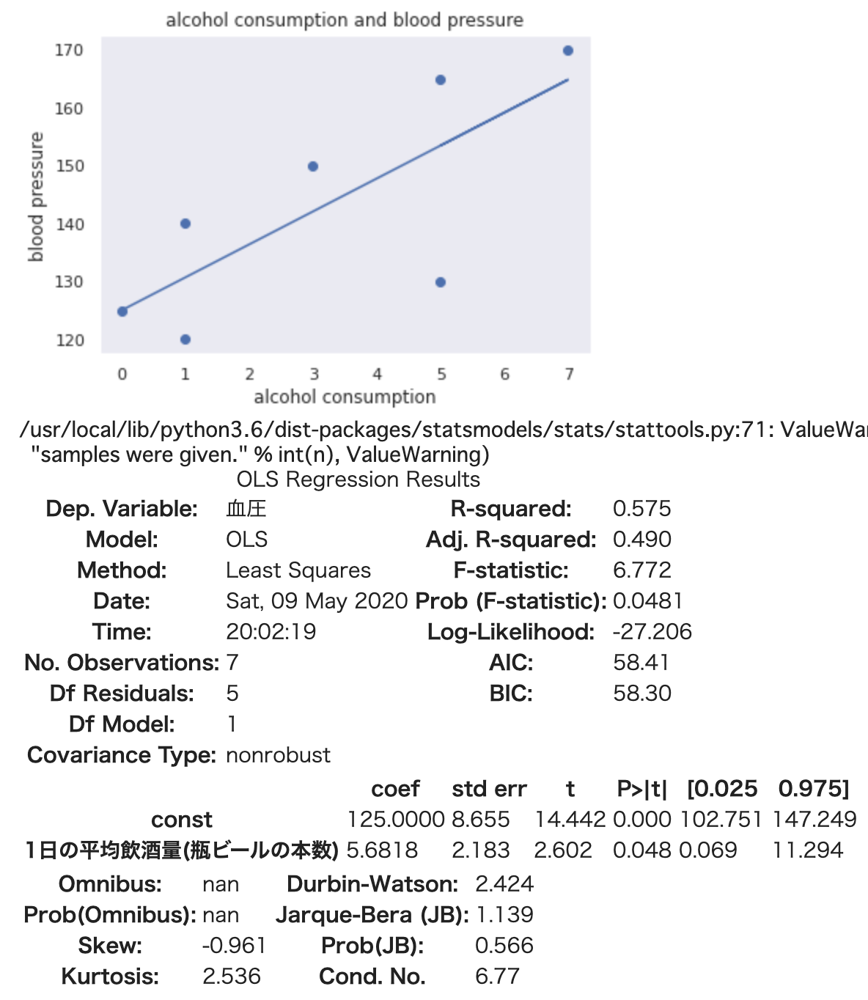

<!DOCTYPE html>
<html class="writer-html5" lang="ja" >
<head>
  <meta charset="utf-8">
  
  <meta name="viewport" content="width=device-width, initial-scale=1.0">
  
  <title>単回帰分析 &mdash; k-lab-seminar 2019 ドキュメント</title>
  

  
  <link rel="stylesheet" href="../../_static/css/theme.css" type="text/css" />
  <link rel="stylesheet" href="../../_static/pygments.css" type="text/css" />
  <link rel="stylesheet" href="../../_static/custom.css" type="text/css" />

  
  
  
  

  
  <!--[if lt IE 9]>
    <script src="../../_static/js/html5shiv.min.js"></script>
  <![endif]-->
  
    
      <script type="text/javascript" id="documentation_options" data-url_root="../../" src="../../_static/documentation_options.js"></script>
        <script src="../../_static/jquery.js"></script>
        <script src="../../_static/underscore.js"></script>
        <script src="../../_static/doctools.js"></script>
        <script src="../../_static/language_data.js"></script>
        <script src="../../_static/translations.js"></script>
        <script async="async" src="https://cdnjs.cloudflare.com/ajax/libs/mathjax/2.7.7/latest.js?config=TeX-AMS-MML_HTMLorMML"></script>
    
    <script type="text/javascript" src="../../_static/js/theme.js"></script>

    
    <link rel="index" title="索引" href="../../genindex.html" />
    <link rel="search" title="検索" href="../../search.html" />
    <link rel="next" title="重回帰分析" href="multipleLinearRegression.html" />
    <link rel="prev" title="はじめに" href="introduction.html" /> 
</head>

<body class="wy-body-for-nav">

   
  <div class="wy-grid-for-nav">
    
    <nav data-toggle="wy-nav-shift" class="wy-nav-side">
      <div class="wy-side-scroll">
        <div class="wy-side-nav-search" >
          

          
            <a href="../../index.html" class="icon icon-home" alt="Documentation Home"> k-lab-seminar
          

          
          </a>

          
            
            
              <div class="version">
                1.0
              </div>
            
          

          
<div role="search">
  <form id="rtd-search-form" class="wy-form" action="../../search.html" method="get">
    <input type="text" name="q" placeholder="Search docs" />
    <input type="hidden" name="check_keywords" value="yes" />
    <input type="hidden" name="area" value="default" />
  </form>
</div>

          
        </div>

        
        <div class="wy-menu wy-menu-vertical" data-spy="affix" role="navigation" aria-label="main navigation">
          
            
            
              
            
            
              <p class="caption"><span class="caption-text">2019 年 度資料</span></p>
<ul>
<li class="toctree-l1"><a class="reference internal" href="../../2019/env/index.html">開発環境</a></li>
<li class="toctree-l1"><a class="reference internal" href="../../2019/python/index.html">はじめての Python</a></li>
</ul>
<p class="caption"><span class="caption-text">2020 年 度資料</span></p>
<ul class="current">
<li class="toctree-l1"><a class="reference internal" href="../webapp/index.html">WEB アプリケーションチュートリアル</a></li>
<li class="toctree-l1"><a class="reference internal" href="../python/computer_science_basics.html">計算機科学基礎</a></li>
<li class="toctree-l1 current"><a class="reference internal" href="index.html">回帰分析</a><ul class="current">
<li class="toctree-l2"><a class="reference internal" href="introduction.html">はじめに</a></li>
<li class="toctree-l2 current"><a class="current reference internal" href="#">単回帰分析</a><ul>
<li class="toctree-l3"><a class="reference internal" href="#id2">例題:「1日の平均飲酒量」と「血圧」の関係</a></li>
</ul>
</li>
<li class="toctree-l2"><a class="reference internal" href="multipleLinearRegression.html">重回帰分析</a></li>
</ul>
</li>
<li class="toctree-l1"><a class="reference internal" href="../introduction_to_nlp/index.html">自然言語処理入門</a></li>
<li class="toctree-l1"><a class="reference internal" href="../machine_learning/index.html">機械学習の基礎</a></li>
<li class="toctree-l1"><a class="reference internal" href="../python/web_api.html">WEB API 入門: 応用課題</a></li>
<li class="toctree-l1"><a class="reference internal" href="../python/job_queuing.html">JOB QUEING 入門</a></li>
<li class="toctree-l1"><a class="reference internal" href="../python/statistics/index.html">ベイズ統計</a></li>
</ul>

            
          
        </div>
        
      </div>
    </nav>

    <section data-toggle="wy-nav-shift" class="wy-nav-content-wrap">

      
      <nav class="wy-nav-top" aria-label="top navigation">
        
          <i data-toggle="wy-nav-top" class="fa fa-bars"></i>
          <a href="../../index.html">k-lab-seminar</a>
        
      </nav>


      <div class="wy-nav-content">
        
        <div class="rst-content">
        
          


<div role="navigation" aria-label="breadcrumbs navigation">

  <ul class="wy-breadcrumbs">
    
      <li><a href="../../index.html" class="icon icon-home"></a> &raquo;</li>
        
          <li><a href="index.html">回帰分析</a> &raquo;</li>
        
      <li>単回帰分析</li>
    
    
      <li class="wy-breadcrumbs-aside">
        
            
            <a href="../../_sources/2020/linearRegression/linearRegression.rst.txt" rel="nofollow"> View page source</a>
          
        
      </li>
    
  </ul>

  
  <hr/>
</div>
          <div role="main" class="document" itemscope="itemscope" itemtype="http://schema.org/Article">
           <div itemprop="articleBody">
            
  <div class="section" id="id1">
<h1>単回帰分析<a class="headerlink" href="#id1" title="このヘッドラインへのパーマリンク">¶</a></h1>
<p>
単回帰分析は、2つの変数の連動に影響関係を想定し、一方の変数がもう一方
の変数に与える影響を <strong>直線の式</strong> によって表すことで、<strong>予測</strong> や <strong>説明</strong> を可能にする方法です。</p>
<p>ビジネスの世界でよく使われています。
「ある商品の売り上げ」が何に影響を受けているのか、
例えば、「アイスの売り上げ」がどれだけ「気温」の影響を受けているか、「ビールの売り上げ」がどれだけ「気温」の影響を受けているか、
「ジュースの売り上げ」がどれだけ「宣伝費用」の影響を受けているか
など様々な分析で使われています。</p>
<p>２変数間において、影響を受ける変数を目的変数（従属変数）、影響を与える変数を説明変数（独立変数）と言います。</p>
<p>また、直線の式は、</p>
<div class="math notranslate nohighlight">
\[y = a + bx\]</div>
<p>と表し回帰直線と呼びます。</p>
<p><strong>y</strong> が目的変数の予測値で、 <strong>a</strong> が切片、<strong>b</strong> は傾き(回帰係数) <strong>x</strong> は説明変数です。</p>
<p>簡単に言ってしまえば、目的変数を説明変数を使ってどれだけ予測、説明できるのかを分析しよう、ということです。</p>
<p>早速手を動かして理解を深めてみましょう。
回帰分析をすることでどのようなことが行えるようになるのか、さらにイメージを膨らませてみてください。</p>
<p>分析は <code class="code docutils literal notranslate"><span class="pre">google</span> <span class="pre">colaboratory</span></code> を使って行います。
<code class="code docutils literal notranslate"><span class="pre">google</span> <span class="pre">cplaboratory</span></code> はブラウザから簡単に <code class="code docutils literal notranslate"><span class="pre">python</span></code> を動かすことができるツールです。</p>
<div class="section" id="id2">
<h2>例題:「1日の平均飲酒量」と「血圧」の関係<a class="headerlink" href="#id2" title="このヘッドラインへのパーマリンク">¶</a></h2>
<p>「1日の平均飲酒量」と「血圧」にはどのような関係があるか調べてみましょう。</p>
<a class="reference internal image-reference" href="../../_images/table1.png"></a>
<p>１日の平均飲酒量と血圧のデータがあるとします。</p>
<p>この表だけみてもあまりピンときません。
じっくりデータを見てみましょう。
また当然ですが確定的なことはまだ何も言えません。</p>
<p>では次に散布図で可視化してみましょう。また相関係数も見てみましょう。</p>
<div class="literal-block-wrapper docutils container" id="id3">
<div class="code-block-caption"><span class="caption-text">飲酒量と血圧の散布図</span><a class="headerlink" href="#id3" title="このコードへのパーマリンク">¶</a></div>
<div class="highlight-python notranslate"><div class="highlight"><pre><span></span><span class="c1"># ライブラリのインポート</span>
<span class="kn">import</span> <span class="nn">pandas</span> <span class="k">as</span> <span class="nn">pd</span>
<span class="kn">import</span> <span class="nn">numpy</span> <span class="k">as</span> <span class="nn">np</span>
<span class="kn">import</span> <span class="nn">matplotlib.pyplot</span> <span class="k">as</span> <span class="nn">plt</span>

<span class="c1"># pandasのDataFrameによる二次元配列の作成</span>
<span class="n">df</span> <span class="o">=</span> <span class="n">pd</span><span class="o">.</span><span class="n">DataFrame</span><span class="p">([[</span><span class="mi">0</span><span class="p">,</span><span class="mi">125</span><span class="p">],[</span><span class="mi">1</span><span class="p">,</span><span class="mi">120</span><span class="p">],[</span><span class="mi">1</span><span class="p">,</span><span class="mi">140</span><span class="p">],[</span><span class="mi">3</span><span class="p">,</span><span class="mi">150</span><span class="p">],[</span><span class="mi">5</span><span class="p">,</span><span class="mi">130</span><span class="p">],[</span><span class="mi">7</span><span class="p">,</span><span class="mi">170</span><span class="p">],[</span><span class="mi">5</span><span class="p">,</span><span class="mi">165</span><span class="p">]],</span> <span class="n">columns</span><span class="o">=</span><span class="p">[</span><span class="s1">&#39;1日の平均飲酒量(瓶ビールの本数)&#39;</span><span class="p">,</span><span class="s1">&#39;血圧&#39;</span><span class="p">])</span>

<span class="c1"># 説明変数</span>
<span class="n">x</span> <span class="o">=</span> <span class="n">df</span><span class="p">[</span><span class="s1">&#39;1日の平均飲酒量(瓶ビールの本数)&#39;</span><span class="p">]</span>
<span class="c1"># 目的変数</span>
<span class="n">y</span> <span class="o">=</span> <span class="n">df</span><span class="p">[</span><span class="s1">&#39;血圧&#39;</span><span class="p">]</span>

<span class="c1"># 散布図の作成</span>
<span class="n">plt</span><span class="o">.</span><span class="n">scatter</span><span class="p">(</span><span class="n">x</span><span class="p">,</span> <span class="n">y</span><span class="p">)</span>
<span class="n">plt</span><span class="o">.</span><span class="n">title</span><span class="p">(</span><span class="s1">&#39;alcohol consumption and blood pressure&#39;</span><span class="p">)</span>
<span class="n">plt</span><span class="o">.</span><span class="n">xlabel</span><span class="p">(</span><span class="s1">&#39;alcohol consumption&#39;</span><span class="p">)</span>
<span class="n">plt</span><span class="o">.</span><span class="n">ylabel</span><span class="p">(</span><span class="s1">&#39;blood pressure&#39;</span><span class="p">)</span>
<span class="n">plt</span><span class="o">.</span><span class="n">grid</span><span class="p">()</span>
<span class="n">plt</span><span class="o">.</span><span class="n">show</span><span class="p">()</span>

<span class="c1"># 相関係数</span>
<span class="n">xy_corrcoef</span> <span class="o">=</span> <span class="n">np</span><span class="o">.</span><span class="n">corrcoef</span><span class="p">(</span><span class="n">x</span><span class="p">,</span> <span class="n">y</span><span class="p">)</span>
<span class="nb">print</span><span class="p">(</span><span class="s1">&#39;相関係数：</span><span class="si">{}</span><span class="s1">&#39;</span><span class="o">.</span><span class="n">format</span><span class="p">(</span><span class="nb">round</span><span class="p">(</span><span class="n">xy_corrcoef</span><span class="p">[</span><span class="mi">1</span><span class="p">][</span><span class="mi">0</span><span class="p">],</span> <span class="mi">2</span><span class="p">)))</span>
</pre></div>
</div>
</div>
<a class="reference internal image-reference" href="../../_images/scatter_plot.png"></a>
<p>相関係数は、0.76です。
この２変数間の関係には、強い相関があるということは言えるようになりました。</p>
<p>また、この散布図を見る限り、どうやら1日の平均飲酒量が増えると、血圧も上っていくように見えます。
しかし、まだこの時点ではそのような確定的なことは言えません。</p>
<p>相関係数はあくまでも２変数の関係の強さを数値で表すだけで、一方の変数がもう一方
の変数に与える影響について断定することはできません。</p>
<p>そこで回帰分析の登場です。</p>
<p>回帰分析をすることで、どちらかの変数が他方の変数に影響を与えているという方向を考えることができるようになります。
散布図と相関係数から、「１日の平均飲酒量」が「血圧」に影響を与えている <strong>っぽい</strong> です。
本当かどうか調べてみましょう。</p>
<p>目的変数を「血圧」、説明変数を「1日の平均飲酒量」とします。</p>
<p>求める回帰式は</p>
<div class="math notranslate nohighlight">
\[血圧予測値 = a + b \times 1日の平均飲酒量\]</div>
<p>です。</p>
<p>また、1日の平均飲酒量の回帰係数bについて、仮説を立てて回帰分析を行うことになります。
回帰分析における帰無仮説と対立仮説は以下の通りです。</p>
<div class="math notranslate nohighlight">
\[ \begin{align}\begin{aligned}H0: b = 0\\H1: b ≠ 0\end{aligned}\end{align} \]</div>
<p>1日の平均飲酒量の回帰係数が0である、ということを帰無仮説として検定を行うことになります。
もし <strong>H0</strong> を棄却できなければ、回帰分析にはあまり意味がないということになります。
<strong>H0</strong> を棄却でき、H1が成立すれば、回帰分析の有意性を主張することができます。</p>
<p>それでは「１日の平均飲酒量」が「血圧」に影響を与えているのかどうかを回帰分析で調べてみます。</p>
<p>まずは <code class="code docutils literal notranslate"><span class="pre">python</span></code> の <code class="code docutils literal notranslate"><span class="pre">statsmodels</span></code> ライブラリを使って回帰分析をしてみます。</p>
<div class="literal-block-wrapper docutils container" id="id4">
<div class="code-block-caption"><span class="caption-text">回帰直線の作成</span><a class="headerlink" href="#id4" title="このコードへのパーマリンク">¶</a></div>
<div class="highlight-python notranslate"><div class="highlight"><pre><span></span><span class="kn">import</span> <span class="nn">matplotlib.pyplot</span> <span class="k">as</span> <span class="nn">plt</span>
<span class="kn">import</span> <span class="nn">statsmodels.api</span> <span class="k">as</span> <span class="nn">sm</span>
<span class="kn">import</span> <span class="nn">pandas</span> <span class="k">as</span> <span class="nn">pd</span>

<span class="n">df</span> <span class="o">=</span> <span class="n">pd</span><span class="o">.</span><span class="n">DataFrame</span><span class="p">([[</span><span class="mi">0</span><span class="p">,</span><span class="mi">125</span><span class="p">],[</span><span class="mi">1</span><span class="p">,</span><span class="mi">120</span><span class="p">],[</span><span class="mi">1</span><span class="p">,</span><span class="mi">140</span><span class="p">],[</span><span class="mi">3</span><span class="p">,</span><span class="mi">150</span><span class="p">],[</span><span class="mi">5</span><span class="p">,</span><span class="mi">130</span><span class="p">],[</span><span class="mi">7</span><span class="p">,</span><span class="mi">170</span><span class="p">],[</span><span class="mi">5</span><span class="p">,</span><span class="mi">165</span><span class="p">]],</span> <span class="n">columns</span><span class="o">=</span><span class="p">[</span><span class="s1">&#39;1日の平均飲酒量(瓶ビールの本数)&#39;</span><span class="p">,</span><span class="s1">&#39;血圧&#39;</span><span class="p">])</span>
<span class="n">x</span> <span class="o">=</span> <span class="n">df</span><span class="p">[</span><span class="s1">&#39;1日の平均飲酒量(瓶ビールの本数)&#39;</span><span class="p">]</span>
<span class="n">y</span> <span class="o">=</span> <span class="n">df</span><span class="p">[</span><span class="s1">&#39;血圧&#39;</span><span class="p">]</span>

<span class="c1"># 切片(定数項)が必要なので切片を追加、statsmodelsの仕様でこれがないと切片が0で出力される）</span>
<span class="n">X</span> <span class="o">=</span> <span class="n">sm</span><span class="o">.</span><span class="n">add_constant</span><span class="p">(</span><span class="n">x</span><span class="p">)</span>

<span class="c1"># 最小二乗法によるmodel作成</span>
<span class="n">results</span> <span class="o">=</span> <span class="n">sm</span><span class="o">.</span><span class="n">OLS</span><span class="p">(</span><span class="n">y</span><span class="p">,</span> <span class="n">X</span><span class="p">)</span><span class="o">.</span><span class="n">fit</span><span class="p">()</span>
</pre></div>
</div>
</div>
<p>結果を出力してみます。</p>
<div class="literal-block-wrapper docutils container" id="id5">
<div class="code-block-caption"><span class="caption-text">結果の出力</span><a class="headerlink" href="#id5" title="このコードへのパーマリンク">¶</a></div>
<div class="highlight-python notranslate"><div class="highlight"><pre><span></span><span class="c1"># 結果の出力</span>
<span class="nb">print</span><span class="p">(</span><span class="n">results</span><span class="o">.</span><span class="n">summary</span><span class="p">())</span>

<span class="c1"># 切片と回帰係数</span>
<span class="n">a</span> <span class="o">=</span> <span class="n">results</span><span class="o">.</span><span class="n">params</span><span class="p">[</span><span class="mi">0</span><span class="p">]</span>
<span class="n">b</span> <span class="o">=</span> <span class="n">results</span><span class="o">.</span><span class="n">params</span><span class="p">[</span><span class="mi">1</span><span class="p">]</span>

<span class="c1"># 散布図</span>
<span class="n">plt</span><span class="o">.</span><span class="n">scatter</span><span class="p">(</span><span class="n">x</span><span class="p">,</span> <span class="n">y</span><span class="p">)</span>
<span class="n">plt</span><span class="o">.</span><span class="n">title</span><span class="p">(</span><span class="s1">&#39;alcohol consumption and blood pressure&#39;</span><span class="p">)</span>
<span class="n">plt</span><span class="o">.</span><span class="n">xlabel</span><span class="p">(</span><span class="s1">&#39;alcohol consumption&#39;</span><span class="p">)</span>
<span class="n">plt</span><span class="o">.</span><span class="n">ylabel</span><span class="p">(</span><span class="s1">&#39;blood pressure&#39;</span><span class="p">)</span>
<span class="n">plt</span><span class="o">.</span><span class="n">grid</span><span class="p">()</span>

<span class="c1"># 散布図に回帰直線の追加</span>
<span class="n">plt</span><span class="o">.</span><span class="n">plot</span><span class="p">(</span><span class="n">x</span><span class="p">,</span> <span class="n">a</span><span class="o">+</span><span class="n">b</span><span class="o">*</span><span class="n">x</span><span class="p">)</span>
<span class="n">plt</span><span class="o">.</span><span class="n">show</span><span class="p">()</span>
</pre></div>
</div>
</div>
<a class="reference internal image-reference" href="../../_images/result_linear_regression.png"></a>
<div class="admonition note">
<p class="admonition-title">注釈</p>
<p>散布図に回帰直線を引くときには、色々な回帰直線を引くことができます。
しかし、回帰分析で求めるのは、「もっともうまくyを予測できる直線」、つまり <strong>最適な</strong> 回帰直線です。
最適な回帰直線を求めるには、最小二乗法を用います。
最小二乗法を使うと、「実測値と予測値のズレ（残差）の２乗の和を最小にする」ことでもっとも確からしい回帰直線を引くことができます。
こちらの解説がわかりやすいです。　<a class="reference external" href="https://www.youtube.com/watch?v=Zz1sgYxrA-k">https://www.youtube.com/watch?v=Zz1sgYxrA-k</a></p>
</div>
<p>この回帰直線の式は</p>
<div class="math notranslate nohighlight">
\[y = 125 + 5.68x\]</div>
<p>となりました。</p>
<p>また、説明率である決定係数(R-squared)が0.575、
飲酒量の回帰係数におけるp値も0.048で有意水準5%以下で有意となり、H0を棄却できます。
無事、1日の平均飲酒量で血圧を約57%を説明できるということになりました。</p>
<p>もしも1日の平均飲酒本数が０ならば血圧が125、飲酒本数が１本増えるごとに血圧が5.68増えています。</p>
<p>それでは、1日に平均で6本飲酒している人の血圧はどうでしょうか。
実際に6本飲酒している人のデータはありません。
しかしこの回帰直線があれば、</p>
<div class="math notranslate nohighlight">
\[159.08 = 125 + 5.68 \times 6\]</div>
<p>1日に平均で6本飲酒している人の血圧はだいたい159くらいということがわかります。</p>
<p>6本飲酒している人のデータはありませんが回帰直線のおかげで <strong>予測</strong> することができました。</p>
<p>また、例えばこの回帰直線のように、
「飲酒量」が増えれば「血圧」も上がってしまう ということを客観的に表すことができたので、
「飲酒量を抑えることで、血圧の上昇を抑えることができる」
という説得力のある <strong>説明</strong> 、主張が可能になります。</p>
<p>これが回帰分析における
「一方の変数がもう一方の変数に与える影響を <strong>直線の式</strong> によって表すことで、<strong>予測</strong> や <strong>説明</strong> を可能にする」
ということです。</p>
<p>イメージ湧きましたか？</p>
<p>しかし皆さんは勘付いていると思いますが、</p>
<p>血圧の上昇って、飲酒量だけで説明できるの？</p>
<p>といった疑問が浮かんでいると思います。</p>
<p>当然飲酒量だけでは説明できません。</p>
<p>疑問の通り、血圧の上昇は飲酒量だけでなく、別の変数も絡み合っています。
例えば、<strong>BMI（肥満度）</strong> も血圧に関わってきそうです。</p>
<p>このように実世界では、一つの説明変数で一つの目的変数を説明することが難しいことが多いです。</p>
<p>そこで、行うのが重回帰分析になります。</p>
<p>重回帰分析では２つ以上の説明変数で一つの目的変数を説明することができます。</p>
<p>それでは重回帰分析に進みます。</p>
</div>
</div>


           </div>
           
          </div>
          <footer>
  
    <div class="rst-footer-buttons" role="navigation" aria-label="footer navigation">
      
        <a href="multipleLinearRegression.html" class="btn btn-neutral float-right" title="重回帰分析" accesskey="n" rel="next">Next <span class="fa fa-arrow-circle-right"></span></a>
      
      
        <a href="introduction.html" class="btn btn-neutral float-left" title="はじめに" accesskey="p" rel="prev"><span class="fa fa-arrow-circle-left"></span> Previous</a>
      
    </div>
  

  <hr/>

  <div role="contentinfo">
    <p>
        
        &copy; 著作権 2019-2020, Takuya Asai

    </p>
  </div>
    
    
    
    Built with <a href="http://sphinx-doc.org/">Sphinx</a> using a
    
    <a href="https://github.com/rtfd/sphinx_rtd_theme">theme</a>
    
    provided by <a href="https://readthedocs.org">Read the Docs</a>. 

</footer>

        </div>
      </div>

    </section>

  </div>
  

  <script type="text/javascript">
      jQuery(function () {
          SphinxRtdTheme.Navigation.enable(true);
      });
  </script>

  
  
    
   

</body>
</html>